Прямоугольный параллелепипед имеет размеры: $a = 40\text{ см}$, $b = 20\text{ см}$, $c = 10\text{ см}$. Определите плотность вещества параллелепипеда, если его масса $m = 6{,}0\text{ кг}$.
Введите плотность в граммах на кубический сантиметр ($\text{г/см}^3$):
Найдем объем прямоугольного параллелепипеда:
$$V = a \cdot b \cdot c = 40\text{ см} \cdot 20\text{ см} \cdot 10\text{ см} = 8000\text{ см}^3$$
На тело массой $5\text{ кг}$ действуют силы, как это показано на рисунке 52, $F_1 = 15\text{ Н}$, $F_2 = 20\text{ Н}$. С каким ускорением будет двигаться тело?
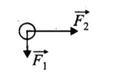
Рис. 52
Введите ускорение в метрах на секунду в квадрате ($\text{м/с}^2$):
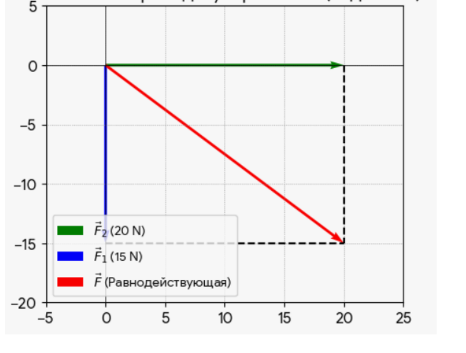
На рисунке 52 векторы сил $\vec{F}_1$ и $\vec{F}_2$ перпендикулярны друг другу. По теореме Пифагора найдем модуль равнодействующей силы $F$:
Проекция скорости автомобиля массой $m = 20\text{ т}$, движущегося по оси $Ox$, изменяется по закону $v_x = A + Bt$, где $A = 20\text{ }\frac{\text{м}}{\text{с}}$, $B = -0{,}10\text{ }\frac{\text{м}}{\text{с}^2}$. Найдите модуль результирующей силы $F$, действующей на автомобиль.
Введите модуль силы в килоньютонах ($\text{кН}$):
В физике уравнение проекции скорости при равноускоренном движении имеет стандартный вид:
$$v_x = v_{0x} + a_x t$$
В условии задачи закон изменения скорости задан математическим выражением:
$$v_x = A + Bt$$
Если записать эти уравнения друг под другом, становится очевидно, какой коэффициент за какую величину отвечает:
$A = v_{0x}$ — это начальная скорость автомобиля. По условию она равна $20\text{ м/с}$.
$B = a_x$ — это проекция ускорения автомобиля. По условию она равна $-0{,}10\text{ м/с}^2$.
Переведем массу в систему СИ: $m = 20\text{ т} = 20\,000\text{ кг}$.
Найдем модуль результирующей силы по второму закону Ньютона:
$$F = m \cdot a = 20\,000\text{ кг} \cdot 0{,}10\text{ м/с}^2 = 2000\text{ Н} = 2\text{ кН}$$
Ответ: $2\text{ кН}$ (или $2000\text{ Н}$).
Задача 7
Масса легкового автомобиля $2\text{ т}$, а грузового — $8\text{ т}$. Сравните ускорения автомобилей, если сила тяги грузового автомобиля в 2 раза больше, чем сила тяги легкового автомобиля. (Найдите отношение $a_{\text{л}} / a_{\text{гр}}$).
Введите отношение ускорений ($a_{\text{л}} / a_{\text{гр}}$):
Запишем формулу ускорения из второго закона Ньютона:
$$a = \frac{F}{m}$$
Выразим ускорения для обоих автомобилей:
Для легкового: $a_{\text{л}} = \frac{F_{\text{тяги.л}}}{m_{\text{л}}}$
Для грузового: $a_{\text{гр}} = \frac{F_{\text{тяги.гр}}}{m_{\text{гр}}}$
Под действием сил $\vec{F}_1$ и $\vec{F}_2$ (рис. 24) тело движется с ускорением, модуль которого $a = 2{,}4\text{ }\frac{\text{м}}{\text{с}^2}$. Найдите массу $m$ тела, если проекции силы $\vec{F}_2$ на оси координат $F_{2x} = 3{,}0\text{ Н}$ и $F_{2y} = 1{,}5\text{ Н}$.
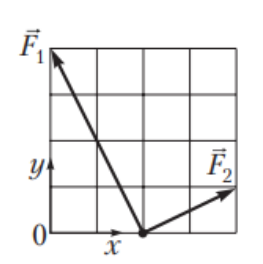
Рис. 24
Введите массу тела в килограммах ($\text{кг}$):
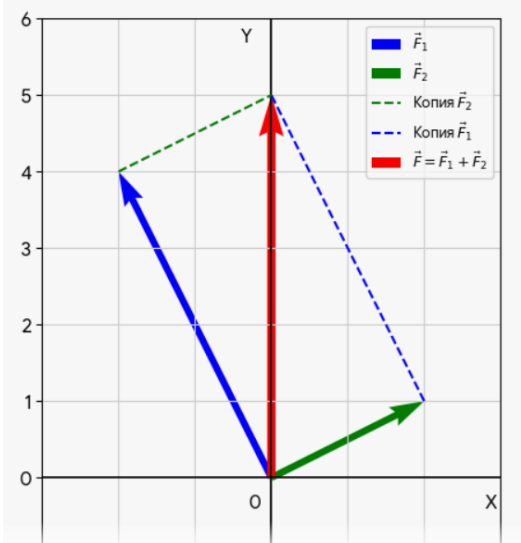
Способ 1. Графический (метод параллелограмма):
Шаг 1: Находим масштаб сетки. По условию для силы $\vec{F}_2$ известны её численные проекции:
По оси $OX$ вектор занимает 2 клетки, и это равно $3{,}0\text{ Н}$.
По оси $OY$ вектор занимает 1 клетку, и это равно $1{,}5\text{ Н}$.
Отсюда получаем цену одной клетки: $1\text{ клетка} = 1{,}5\text{ Н}$.
Посчитав клетки получившегося итогового вектора, мы увидим его проекции на оси: по горизонтали $OX$ он не отклоняется (занимает 0 клеток), а по вертикали $OY$ поднимается ровно на 5 клеток вверх.
Умножив 5 клеток на масштаб одной клетки ($1{,}5\text{ Н}$), мы сразу получаем модуль силы:
Два магнита (массами $m_1 = 24\text{ г}$ и $m_2 = 12\text{ г}$) притягиваются друг к другу. Определите модуль силы $F_2$, с которой второй магнит притягивает первый, если модуль силы, с которой первый магнит притягивает второй, равен $F_1 = 2{,}4\text{ Н}$.
Эта задача полностью опирается на третий закон Ньютона, который гласит: тела взаимодействуют друг с другом с силами, равными по модулю и противоположными по направлению ($\vec{F}_1 = -\vec{F}_2$).
Первый магнит притягивает второй с силой $F_1$.
Второй магнит притягивает первый с силой $F_2$.
Согласно третьему закону Ньютона, модули этих сил обязательно равны:
$$F_2 = F_1 = 2{,}4\text{ Н}$$
Примечание: Различие в массах магнитов (24 г и 12 г) никак не влияет на равенство сил.
Ответ: в ($2{,}4\text{ Н}$).
Задача 10
Ваня ($m_1 = 40\text{ кг}$), стоя на гладком льду, отталкивает от себя камень (снаряд в кёрлинге массой $m_2 = 20\text{ кг}$), придавая ему ускорение, модуль которого $a_2 = 4{,}0\text{ }\frac{\text{м}}{\text{с}^2}$. Определите модуль ускорения $a_1$, которое получает при этом Ваня.
Введите модуль ускорения в метрах на секунду в квадрате ($\text{м/с}^2$):
Согласно третьему закону Ньютона, с какой силой Ваня отталкивает камень ($F_2$), с точно такой же по модулю силой и камень отталкивает Ваню ($F_1$):
$$F_1 = F_2$$
Распишем каждую силу через второй закон Ньютона ($F = m \cdot a$):
Сила, действующая на Ваню: $F_1 = m_1 \cdot a_1$
Сила, действующая на камень: $F_2 = m_2 \cdot a_2$
Приравняем эти выражения:
$$m_1 \cdot a_1 = m_2 \cdot a_2$$
Выразим и рассчитаем модуль ускорения Вани ($a_1$):
Пуля массой $m = 10\text{ г}$ попадает в закреплённую доску и останавливается, пройдя расстояние $s = 6{,}5\text{ см}$. Определите модуль силы $F$, с которой пуля действовала на доску, если модуль скорости пули в момент попадания в доску $v_0 = 130\text{ }\frac{\text{м}}{\text{с}}$. Примечание. Движение пули внутри доски считайте равнозамедленным.
$$F = m \cdot a = 0{,}01\text{ кг} \cdot 130\,000\text{ м/с}^2 = 1300\text{ Н} = 1{,}3\text{ кН}$$
По третьему закону Ньютона сила действия пули на доску равна силе сопротивления доски: $F = 1{,}3\text{ кН}$.
Ответ: $1{,}3\text{ кН}$.
Задача 12
Материальная точка массой $m = 80\text{ г}$ движется с ускорением, модуль которого $a = 12{,}5\text{ }\frac{\text{м}}{\text{с}^2}$, под действием двух взаимно перпендикулярных сил $\vec{F}_1$ и $\vec{F}_2$. Если модуль силы $F_1 = 0{,}8\text{ Н}$, то модуль силы $F_2$ равен:
По второму закону Ньютона модуль равнодействующей силы:
Автомобиль массой $m = 2 \cdot 10^3\text{ кг}$, двигавшийся со скоростью, модуль которой $v_0 = 36\text{ }\frac{\text{км}}{\text{ч}}$, остановился, пройдя после начала торможения путь $s = 25\text{ м}$. Если при торможении автомобиль двигался с постоянным ускорением, то модуль равнодействующей $F$ всех сил, действующих на автомобиль, равен:
Переведем все величины в систему СИ: $m = 2000\text{ кг}$, $v_0 = 10\text{ м/с}$, $v = 0$, $s = 25\text{ м}$.
Ускорение найдем из формулы связи пути и скорости:
$$F = m \cdot a = 2000\text{ кг} \cdot 2\text{ м/с}^2 = 4000\text{ Н} = 4\text{ кН}$$
Ответ: вариант 2 ($4\text{ кН}$).
Задача 14
Кинематический закон движения тела вдоль оси координат $Ox$ имеет вид $x = A + Bt + Ct^2$, где $A = 5\text{ м}$, $B = 8\text{ }\frac{\text{м}}{\text{с}}$ и $C = -2\text{ }\frac{\text{м}}{\text{с}^2}$. Если проекция равнодействующей всех сил, действующих на тело, $F_x = -1{,}6\text{ Н}$, то масса $m$ тела равна:
Согласно второму закону Ньютона: $F_x = m \cdot a_x \implies m = \frac{F_x}{a_x}$.
Сопоставим уравнение $x = A + Bt + Ct^2$ со стандартным уравнением $x = x_0 + v_{0x}t + \frac{a_x}{2}t^2$:
На материальную точку массой $m = 400\text{ г}$ действуют две силы $\vec{F}_1$ и $\vec{F}_2$ (рис. 33). Если проекции силы $\vec{F}_2$ на оси координат $F_{2x} = 1{,}2\text{ Н}$ и $F_{2y} = -1{,}8\text{ Н}$, то модуль ускорения $a$ точки равен:
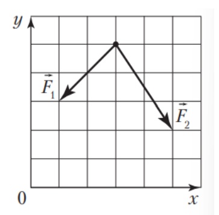
Рис. 33
Проекции равнодействующей силы на оси координат $F_x = F_{1x} + F_{2x} = 0\text{ Н}$ и $F_y = F_{1y} + F_{2y} = -3{,}0\text{ Н}$. Модуль результирующей силы $F = 3{,}0\text{ Н}$.
Согласно второму закону Ньютона модуль ускорения точки:
На материальную точку действуют три силы, расположенные в одной плоскости (рис. 34). Если модуль силы $F_1 = 4\text{ Н}$, то модуль равнодействующей трех сил $F$ равен:
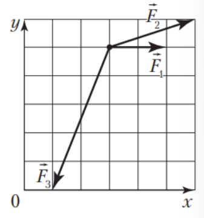
Рис. 34
Так как длина вектора $\vec{F}_1$, показанного на рисунке 34, составляет две клетки, то можно определить проекции всех векторов: $F_{1x} = 4\text{ Н}$, $F_{2x} = 6\text{ Н}$, $F_{3x} = -4\text{ Н}$, $F_{1y} = 0\text{ Н}$, $F_{2y} = 2\text{ Н}$ и $F_{3y} = -10\text{ Н}$.
Проекции равнодействующей силы на оси $Ox$ и $Oy$ соответственно:
Проекция скорости одного тела массой $m_1$, движущегося вдоль оси $Ox$, имеет вид $v_{1x} = A_1 + B_1 t$, где $A_1 = 2{,}0\text{ }\frac{\text{м}}{\text{с}}$, $B_1 = 4\text{ }\frac{\text{м}}{\text{с}^2}$. Проекция скорости другого тела массой $m_2$, движущегося вдоль оси $Ox$, имеет вид $v_{2x} = A_2 + B_2 t$, где $A_2 = 2{,}0\text{ }\frac{\text{м}}{\text{с}}$, $B_2 = -1\text{ }\frac{\text{м}}{\text{с}^2}$. Если модули равнодействующих сил, действующих на эти тела, одинаковы, то отношение $\frac{m_2}{m_1}$ равно:
Согласно второму закону Ньютона: $F = m \cdot a \implies m_1 \cdot a_1 = m_2 \cdot a_2 \implies \frac{m_2}{m_1} = \frac{a_1}{a_2}$.
На тело массой $m = 25\text{ кг}$ действуют две взаимно перпендикулярные силы, модули которых $F_1 = 45\text{ Н}$ и $F_2 = 60\text{ Н}$. Если в начальный момент времени тело покоилось, то модуль перемещения $\Delta r$ тела за промежуток времени $\Delta t = 4{,}0\text{ с}$, считая от начала движения, равен:
Тело массой $m = 3\text{ кг}$ движется вдоль оси $Ox$. На рисунке 36 представлен график зависимости проекции равнодействующей силы $F_x$ от времени $t$. Если начальная скорость тела равна нулю, то модуль скорости $v$ движения тела в момент времени $t = 5\text{ с}$ равен:
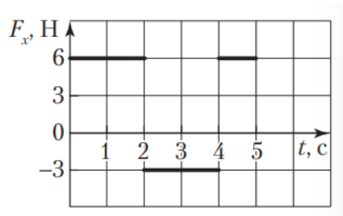
Рис. 36
Найдем проекцию ускорения тела на каждом из трех промежутков времени:
На материальную точку массой $m = 9{,}0\text{ кг}$, находящуюся на гладкой горизонтальной поверхности, действуют две силы $\vec{F}_1$ и $\vec{F}_2$, направленные вдоль этой поверхности (рис. 38). Если модуль первой силы $F_1 = 18\text{ Н}$, то модуль ускорения $a$ материальной точки равен ... м/с$^2$.
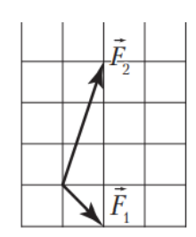
Рис. 38
Введите модуль ускорения в метрах на секунду в квадрате ($\text{м/с}^2$):
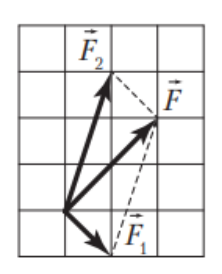
Рис. 407
На рисунке 407 показана равнодействующая сила $\vec{F}$, модуль которой в два раза больше $F_1$. По второму закону Ньютона:
Трамвай массой $m = 10\text{ т}$ начал от остановки равноускоренно двигаться по прямолинейному горизонтальному участку дороги. После того как трамвай проехал путь $s = 50\text{ м}$, модуль его скорости достиг $v = 10\text{ }\frac{\text{м}}{\text{с}}$. Если модуль силы сопротивления, действующей на трамвай, $F_c = 4{,}0\text{ кН}$, то модуль силы тяги $F$ двигателя трамвая равен ... кН.
Введите модуль силы тяги в килоньютонах ($\text{кН}$):
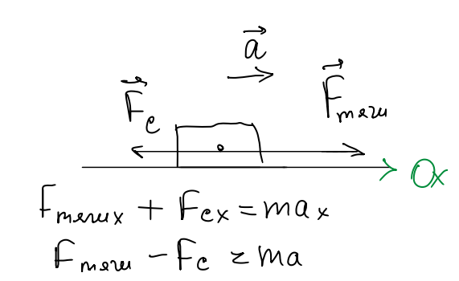
По второму закону Ньютона $F - F_c = ma$, где $a = \frac{v^2}{2s}$ — модуль ускорения трамвая:
Яхта массой $m = 6{,}0\text{ т}$ движется с постоянной скоростью при попутном ветре. На рисунке 39 изображены сила Архимеда $\vec{F}_A$ (выталкивающая сила) и сила сопротивления $\vec{F}_c$, с которой вода действует на яхту. Если ветер действует на яхту с силой $\vec{F}_{\text{в}}$, направленной горизонтально, то модуль этой силы $F_{\text{в}}$ равен ... кН.
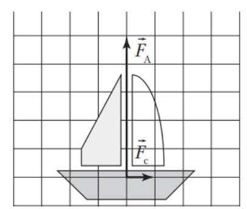
Рис. 39
Введите модуль силы ветра в килоньютонах ($\text{кН}$):
По условию яхта движется с постоянной скоростью ($v = \text{const}$), а значит, её ускорение равно нулю ($a = 0$). Векторная сумма всех сил равна нулю:
Действует ли сила тяжести на Ваню, когда он подпрыгнул вверх?
Сила тяжести — это сила гравитационного притяжения, с которой Земля притягивает к себе любое тело, имеющее массу. Земля продолжает притягивать Ваню с силой $F_{\text{т}} = mg$ в любой точке его траектории.
Вес тела — это сила, с которой тело давит на опору или растягивает подвес. В полёте вес Вани действительно равен нулю (невесомость).
Следовательно, сила тяжести на Ваню действует всегда.
Ответ: а (Действует).
Задача 24
Во сколько раз сила тяжести, действующая на 16-килограммовую гирю, больше силы тяжести, действующей на 80-граммовую шоколадку?
Сила тяжести любого тела рассчитывается по формуле: $F_{\text{т}} = m \cdot g$.
Магнит скользит равномерно по вертикальной дверце холодильника под действием силы тяжести $F_{\text{тяж}}$. Кроме силы тяжести $F_{\text{тяж}}$, на магнит действуют сила трения $F_{\text{тр}}$, сила магнитного притяжения $F_{\text{м}}$ и сила реакции опоры $N$ (рисунок). Какая из этих сил связана с силой давления $F_{\text{дав}}$ магнита на поверхность холодильника по третьему закону Ньютона?
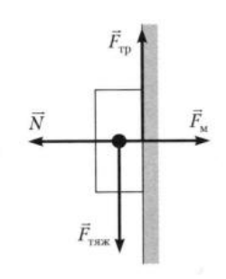
В нашей паре взаимодействуют два тела: магнит и поверхность холодильника.
Действие магнита: магнит давит на дверцу холодильника с силой давления $\vec{F}_{\text{дав}}$ (направлена вправо, вглубь дверцы).
Противодействие холодильника: дверцу холодильника отталкивает магнит обратно с силой реакции опоры $\vec{N}$ (направлена влево).
Ответ: г ($N$).
Задача 26
Модуль веса скелетона (спортивных саней), стоящего на горизонтальной поверхности ледовой трассы, $P = 320\text{ Н}$. Если на скелетон ляжет спортсмен массой $m = 62{,}0\text{ кг}$, то модуль силы упругости $F_{\text{упр}}$, с которой лед будет действовать на скелетон, станет равным:
По третьему закону Ньютона модуль силы упругости равен модулю силы давления скелетона на лед:
Зависимость проекции скорости $v_x$ от времени $t$ груза массой $m = 0{,}6\text{ кг}$, который поднимают вертикально вверх с помощью троса, представлена на графике (рис. 35). Модуль силы натяжения троса $F_{\text{н}}$ равен:
Нить продета через бусинку массой $m = 8{,}0\text{ г}$ и натянута вертикально. Бусинка соскальзывает по нити. Если модуль силы трения, действующей на бусинку, $F_{\text{тр}} = 60\text{ мН}$, то модуль ускорения $a$ бусинки равен:
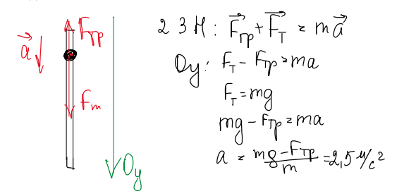
По 2-му закону Ньютона: $\vec{F}_{\text{тр}} + \vec{F}_{\text{т}} = m\vec{a}$.
Если при помощи веревки можно равномерно поднимать груз, масса которого не превышает $m_1 = 24\text{ кг}$, то модуль максимального ускорения $a_{\text{max}}$, с которым на этой же веревке можно поднимать груз массой $m_2 = 20\text{ кг}$, равен:
Алиса ($m = 45\text{ кг}$) качается на качелях. Определите модуль силы $F_{\text{A}}$, с которой Алиса действует на сиденье в нижней точке траектории, если модуль её скорости в этот момент $v = 5{,}0\text{ м/с}$, а длина верёвок $L = 2{,}5\text{ м}$.
Введите силу в Ньютонах ($\text{Н}$):
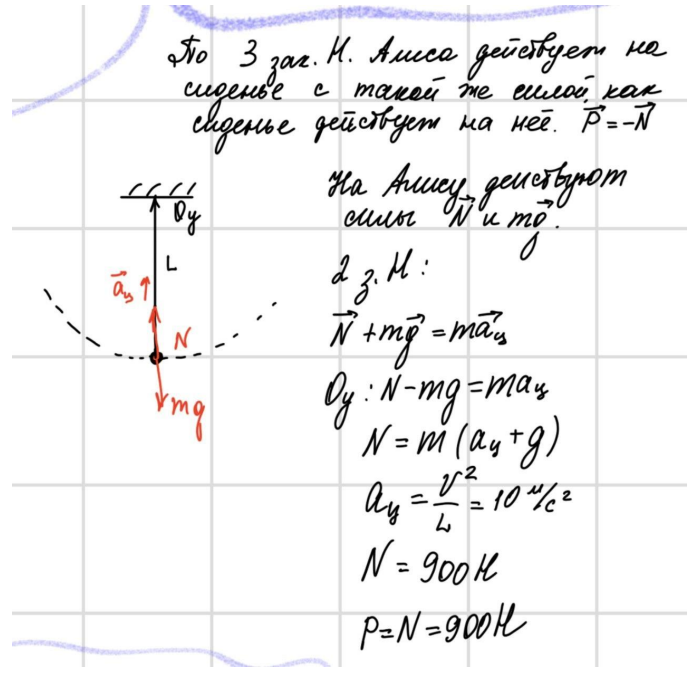
По 3 закону Ньютона Алиса действует на сиденье с такой же силой, как сиденье действует на неё: $\vec{P} = -\vec{N}$.
По 2 закону Ньютона в проекции на ось $Oy$ (вверх):
На тело, равноускоренно движущееся по горизонтальной поверхности с ускорением, модуль которого $a = 2{,}0\text{ }\frac{\text{м}}{\text{с}^2}$, действуют четыре силы, две из которых $\vec{F}$ и $\vec{F}_{\text{тр}}$ показаны на рисунке 40. Если модуль силы трения $F_{\text{тр}} = 8{,}0\text{ Н}$, то на тело действует сила тяжести, модуль $mg$ которой равен ... Н.
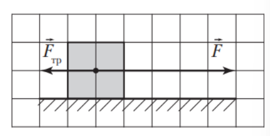
Рис. 40
Введите модуль силы тяжести в Ньютонах ($\text{Н}$):
В соответствии с рисунком 40 модуль силы $F = \frac{5}{2}F_{\text{тр}} = 2{,}5 \cdot 8{,}0 = 20\text{ Н}$.
Из второго закона Ньютона следует: $F - F_{\text{тр}} = ma \implies 20 - 8 = m \cdot 2{,}0 \implies m = 6\text{ кг}$.
Шар массой $m = 0{,}50\text{ кг}$, падая без начальной скорости с высоты $h_1 = 10\text{ м}$, попадает в сугроб и пробивает в нем яму глубиной $h_2 = 80\text{ см}$. Модуль силы сопротивления воздуха $F_{c1} = 0{,}60\text{ Н}$. Если движение шара в воздухе и в снегу было равноускоренным, то модуль силы сопротивления $F_{c2}$, действующей на шар в снегу, равен ... Н.
Введите модуль силы сопротивления в Ньютонах ($\text{Н}$):
С поверхности Земли вертикально вверх было брошено тело со скоростью, модуль которой $v_0 = 32\text{ }\frac{\text{м}}{\text{с}}$. Если сила сопротивления воздуха не зависит от скорости, а модуль этой силы составляет $\eta = 0{,}6$ модуля силы тяжести, действующей на тело, то тело находилось в полете в течение промежутка времени $\Delta t$, равного ... с.
Введите полное время полета в секундах ($\text{с}$):